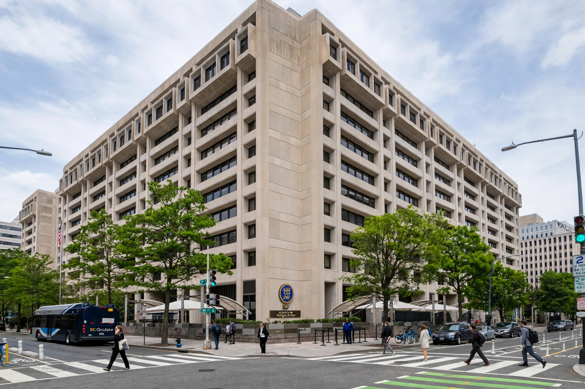

Washington Consensus
From Wikipedia, the free encyclopedia

The Washington Consensus is a set of ten economic policy prescriptions considered to constitute the standard reform package promoted for crisis-wracked developing countries by Washington, D.C.–based institutions such as the International Monetary Fund (IMF), the World Bank and the US Treasury. The term was coined in 1989 by the economist John Williamson, initially with Latin America in mind.
The ten policies
Williamson's original list comprised: fiscal discipline; redirection of public spending towards education, health and infrastructure; tax reform with moderate marginal rates; market-determined interest rates; competitive exchange rates; trade liberalisation; liberalisation of inward foreign direct investment; privatisation; deregulation; and legal security for property rights.
Application and criticism
The package underpinned the structural adjustment programmes of the 1980s–90s and the transition policies in post-communist states. Critics — including Joseph Stiglitz — blamed it for slow growth, rising inequality and crises such as the Asian crisis and Argentina's 2001 collapse, arguing that it ignored institutions, sequencing and social safety nets. Williamson himself objected that the term had mutated into a synonym for market fundamentalism ('Neoliberalism') that he never intended.
Aftermath
From the 2000s the IMF and World Bank moderated the agenda — the so-called 'augmented' or post-Washington Consensus — emphasising governance, institutions and poverty reduction. The term remains a fixture of debates over globalisation and development policy.